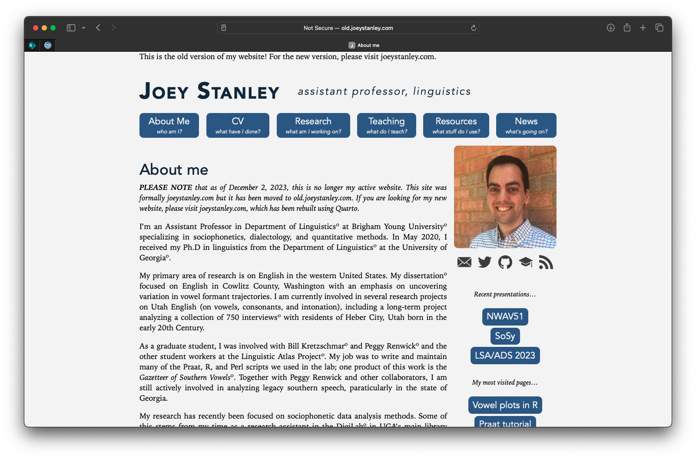

After exactly seven years with my old website, I’ve decided to change it to what you are seeing now. This page serves as a bit of a summary of what I did and why. It’s not particuarlly well-organized since I added to it here and there over four months. But it might be helpful to you if you’re considering such a move.
What was wrong with the old one?
I built my old website in September 2016. I had a research assistantship at the DigiLab at UGA, and Emily McGinn, the supervisor, suggested I find ways to increase my online presence. I learned some web design and CSS skills skills and eventually made Version 1 of my website. That version was essentially the same as what I built in the tutorial I followed, so a few months later I rewrote everything from scratch and made Version 2. (Let’s be honest though, it’s still obviously heavily based on the tutorial.) Other than very minor tweaks to a few things, that’s how my website has been since then.
However, it got a bit unwieldy. The blog was organized just fine, but I also added pages here and there to go along with workshops and other presentations I gave. It got more confusing when I gave the same workshop a second time and had multiple similar pages floating around. Since I didn’t foresee some of these additions, its growth was reminiscent of unplanned suburban sprawl. For examples, sometimes images were just dumped into a folder, others were better organized. Non-blog pages were hidden and were sometimes a top-level page and other times within a dedicated subdirectory. Each individual addition wasn’t a big deal, but once I stepped back and looked at it all, it was a mess.
The format of my tutorials wasn’t consistent either. I have lots of handouts on my website, tucked away here and there. If they were associated with a workshop, they were separate R Markdown files that didn’t fit in with the rest of the site. Some of my earliest ones are PDFs of Word files! If they weren’t associated with a workshop, they’re regular blog posts. But because the site wasn’t connected to R, I had to do a lot of copying and pasting R Markdown code and careful insertion of images to get those tutorials to look right. In some cases, the extra work made it possible to do things like syntax highlighting in Praat and highlighting specific lines of code. But that was all done by manually inserting HTML tags and updating my CSS.
Also, as careful as I was about my CSS, it wasn’t perfect. I think there were some issues if like a list had only one element, and there were things with hyperlinks. Some one-off portions of blogs or tutorials sometimes didn’t look right. I had a disclaimer at the bottom of every page, saying something like, “This website is built from scratch. Pardon the flaws; I am not a web designer.†Which was a humble brag if anything. But as the site grew I didn’t want to change the CSS because it might change some blog post from years ago in unexpected ways.
Ultimately, I didn’t mind the mess because it’s what made my site unique. But, what made me finally decide to migrate to Quarto was the underlying architecture. It was built using Jekyll, which involves a programming language called Ruby in some way. After seven years I still have no idea what either of those are. I did this because it’s what the tutorial I followed used. When the site worked, it was great. But sometimes, the Ruby dependencies (called “gems”) would update or break or whatever and I had to google around trying to find a fix. I had no idea what I was doing and it led to a lot of frustrated late nights trying to get my website up and running again.
Then Quarto comes along, which makes it easy to make a blog entirely within R Studio. I have been very familiar with the R world for a while. In 2017, I was an early adopter of Shiny (at least in linguistics, I think), so I was able to integrate all my html, CSS, and R skills into the Gazetteer of Southern Vowels. In 2020, I also started dabbling with creating my own R Packages and using the amazing pkgdown to make dedicated websites for them (see joeyr, futurevisions, barktools, and joeysvowels). Finally, I have a side project that involves collecting and analyzing data about what hymns are sung in LDS congregations, and in 2023 I decided to build the site entirely in Quarto.
So, I’ve gradually built up to web development in R over the years and Quarto seems like the logical place to migrate to. Plus, it has some features that I’ve always wanted, like scrolling table of contents and a search feature. After some encouragement from folks on Twitter, I decided it’s time to bite the bullet and go for it.
What does it take to migrate?
I’m doing this page by page. Here’s the order I took:
- My homepage and any links on it. I didn’t clean up the linked pages, but at least there weren’t any dead links.
- My blog posts
- I started with some of my earliest ones because they were the simplest.
- Then moved on to any conference or paper announcement. As part of that, I also transferred the associated slides, papers, and other files.
- I then finished any non-tutorial posts.
- I saved the tutorials for last because they would take the most time. Fortunately, it wasn’t too bad changing the static code blocks to ones that are run when the page is rendered. However, because dependencies like packages and dataset have been updated, some of the details and specific results have changed. Nothing major though.
- Other pages that are top-level or close to top-level, but not right on my home page. Things like splashscreens to workshops I’ve done. Thse in particular were tricky because many of them had links to other parts of the website, including many redirects. I hope they all work!
- Finally, I updated my Resources and CV pages. Those were mostly checking to make sure links worked (and removing dead links), and making sure all the files in my downloads folder transfered over.
This took several months to make the full transfer. Little did I know that I had over 100 different webpages (mostly blog posts) all contained within my site. This was a surprise to me because I had not idea I had created so much content. I very slowly made progress by creating a reminder on my phone to migrate one webpage a day. Some were pretty straightforward. Others took more time, like tutorials and other code-based ones.
It was kinda fun to read through some of my old posts. In some cases, I added marginalia that basically pointed out how silly I was several years ago. I don’t think many people visit those early blog posts, so no one’s going to see them anyway.
Appearance
The biggest change is obviously the look of the site. One of the main reasons I didn’t want to switch to Quarto initially is because I didn’t want it to look like all the othe Quarto sites. But, once I started digging into the HTML, I saw how I could modify the CSS to resemble my previous site.
The navigation bar at the top was the trickiest, but I’m very pleased with the results. I tried for a long time to get my name and title to across the top, but I could not figure it out. It bothered me a lot because it made the buttons not centered over the body of the site. But, my wife recommended I make it a different color. Basically, just lean into the navbar. And it worked. I really like how this turned out.

You may have noticed too that I removed the “Resources†link and replaced it with “Idiolect.†I haven’t been updating my “Resources†page for a few years, so it was getting a little stale, and honestly a bit unwieldy. It still exists, but it’s now joined the several other pages on my site that you kinda have to know about to get to because there are no obvious links to it. (Still trying to find a place for those links.) Plus, I like my idiolect page.
I’ve also moved all my socials to the top right corner. Since Quarto has a spot for those, I figured I might as well use that, rather than having them under my picture. That way they’re accessible from every webpage within the site.
I also updated my profile picture since my old one was from 2019.
Finally, I changed the hyperlink style back to something more standard. I used to have hyperlinks displayed in the same color as regular text, and then have a little red circle after it. I saw it on Butterick’s Practical Typography and liked it. I don’t know how I feel about it anymore. It’s a simple change with CSS, and I even blogged about it when I first did it. But, I guess my preferences have changed.
What I could not figure out was a link and previous on my homepage to my latest blog post. Not a big deal I suppose.
Changes
I’ve tried to keep as much of the original structure of the site the same as I could. However, as I migrated, I realized that I could make things overall a bit more contained by changing the structure of associated files. However, some things did change, but I tried my best to make sure any external links to the site did not break. Here’s a list of the changes I’ve made.
The main change is that each blog is now in its own self-contained folder. The previous structure had all posts in a single folder and all images in another folder. This time, the images associated with a blog post are contained within that folder. So, instead of this:
├──📁blog
| ├──📄blog post 1.md
| ├──📄blog post 2.md
├──📁images
| ├──🌅image1.png
| ├──🌅image2.pngIt’s now this:
├──📁blog
| ├──📁blog post 1
| | ├── 📄index.qmd
| | ├── 🌅image1.png
| ├──📁blog post 2
| | ├── 📄index.qmd
| | ├── 🌅image2.pngIt shouldn’t affect any urls to existing blog posts because the url blog/blog post 1 in the old format would go to the blog post 1.md file and in the new one it’ll go to the blog post 1 directory, which’ll display index.qmd by default. I was concerned about changing the url because I know some people have cited my turorials in published work and I didn’t want those urls to break. I think this’ll work and it’ll keep the site better organized.
The Process
It took from September 10 to November 27 to transfer all my entire website. I set a reminder to do at least one page every day, and since there are over 100 webpages on this website, it took a while.
As far as specific things I did to transfer each page over, here’s what I did
- I created the file structure shown above and moved the file over to its new folder. I then renamed it from “2023-12-02-title-of-blog-post.md†to “index.qmd”, making sure to do the file extension too.
- Within each post, I needed to update the header. I change from “tags†to “categories”, from “redirect_from†to “aliases.†I add a date-modified if needed.
- I then had to go through and make sure the whole post looked good. For the most part, there were very few changes I needed. The only things that needed manual work was when I added HTML code directly into the markdown file to get some specific CSS. So like, side notes, or custom “buttons†for downloading files had to be updated.
- I haven’t figured out if I can do redirects, which is a bummer because I used those a lot.
- As I went through, I added sidenotes to clarify, update, or just comment on what I said a few years ago.
As mentioned above, for some of my code-based blog posts, like tutorials, I ended up rerunning the code. This resulted in small changes here and there, but nothing that should hurt anyone.
There are a few changes I’d like to do still, like rename blog post folders to something shorter and more consistent, which would mean I’ll have to carefully add aliases to the old names and make sure they all work.
Conclusion
I really like the new look of the new site. I have a whole laundry list of things I’d like to do still, like cleaning up old files and whatnot. I also want to add retroactive blog posts about every conference I went to and every paper I presented, so I can always have a home for each one. I also have over a dozen ideas for future blog posts.